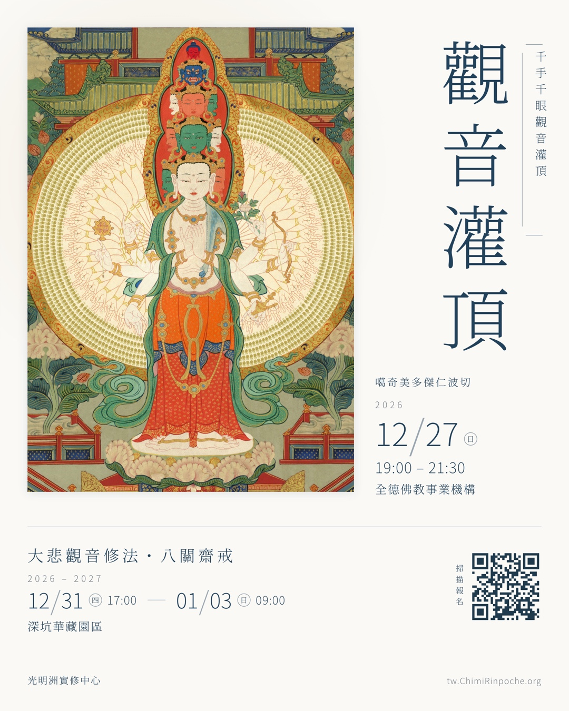

2026 年 12 月 27 日（日）晚上，噶奇美多傑仁波切將於台北全德佛教事業機構給予千手千眼觀音灌頂。誠摯邀請您一同前來領受。
仁波切說：
（2019 年觀音灌頂開示）
（2026 年秋季八關齋戒開示）
（2018 年紐涅閉關開示）
（2026 年秋季八關齋戒開示）
本次法會亦將於壇城設立長壽祈福與亡者超薦牌位，並開放隨喜護持與志工發心，讓無法親臨現場的法友，也能一同累積殊勝功德，共結觀音法緣。
噶奇美多傑仁波切（GarTul Chimi Dorjee Rinpoche）
尊貴的噶奇美多傑仁波切為當代藏傳佛教各大傳承共許的成就者怙主噶千仁波切（Garchen Rinpoche）之上師的轉世，被尊為觀世音菩薩慈悲的化身。仁波切長年以大悲願心引導眾生修持淨化與菩提之道，利益無數有情。
🔗 仁波切的生平、法脈傳承與閉關修學歷程，請見 我們的指導上師｜噶奇美多傑仁波切
2026/12/27（日）19:00 ～ 21:30
全德佛教事業機構
台北市松山區光復南路 49 號 在 Google 地圖開啟
一、現場領受灌頂：歡迎法友報名親臨現場領受灌頂，不收費，可隨喜供養。
二、登記長壽祈福與亡者超薦牌位：可為在世親友登記長壽祈福牌位，或為已故親人登記亡者超薦牌位，於法會修法回向。牌位功德金 $1,000，長壽祈福與亡者超薦可同時登記，姓名與字數不限。
三、隨喜護持法會：可隨喜供燈、供花、供齋或護持法會，共同成就此次修法功德。
四、發心護法志工：法會志工於 12/27（日）下午集合，歡迎在報名表勾選。
2026/12/31（四）17:00 至 2027/01/03（日）09:00，大悲觀音修法・八關齋戒，深坑華藏園區。詳見 【2027新年紐涅】八關齋戒｜千手千眼觀音斷食齋戒閉關
填寫下列表單後按「送出報名」。有牌位或護持金額的，送出後可用信用卡或 ATM 轉帳付款（藍新金流），也可以匯款。
將於法會前寄發行前通知，請留意所留電子信箱。